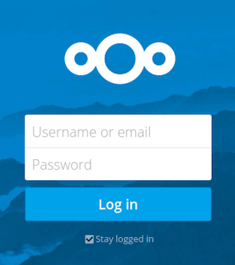

The Nextcloud Web Interface¶
You can connect to your Nextcloud server using any Web browser; just point it to your Nextcloud server and enter your username and password. Supported Web browsers are:
Mozilla Firefox 14+
Google Chrome/Chromium 18+
Safari 7+
Internet Explorer 11+
Microsoft Edge

Navigating the Main User Interface¶
By default, the Nextcloud Web interface opens to your Files page. You can add, remove, and share files, and make changes based on the access privileges set by you (if you are administering the server) or by your server administrator.

The Nextcloud user interface contains the following fields and functions:
- Apps Selection Menu (1): Located in the upper left corner, you’ll find all your apps which are available on your instance of Nextcloud. Clicking on an apps icon will redirect you to the app.
- Apps Information field (2): Located in the left sidebar, this provides filters and tasks associated with your selected app. For example, when you are using the Files apps you have a special set of filters for quickly finding your files, such as files that have been shared with you, and files that you have shared with others. You’ll see different items for other apps.
- Application View (3): The main central field in the Nextcloud user interface. This field displays the contents or user features of your selected app.
- Navigation Bar (4): Located over the main viewing window (the Application View), this bar provides a type of breadcrumbs navigation that enables you to migrate to higher levels of the folder hierarchy up to the root level (home).
- New button (5): Located in the Navigation Bar, the
Newbutton enables you to create new files, new folders, or upload files.
Note
You can also drag and drop files from your file manager into the Files Application View to upload them to your instance. Currently, the only Web browsers that support drag-and-drop folders are Chrome and Chromium.
- Search field (6): Click on the magnifier in the upper right hand corner of to search for files.
- Contacts Menu (7): Gives you an overview about your contacts and users on your server. Dependent on the given details and available apps, you can directly start a video call with them or send emails.
- Gallery button (8). This looks like four little squares, and takes you directly to your image gallery.
- Personal Settings menu (9): Click on the gear icon or your profile picture,
located to the right of the Search field, to open your Personal Settings
dropdown menu. Your Personal page provides the following settings and features:
- Links to download desktop and mobile apps
- Re-run the First Run Wizard
- Server usage and space availability
- Password management
- Name, email, and profile picture settings
- Manage connected browsers and devices
- Group memberships
- Interface language settings
- Manage notifications
- Federated Cloud ID and social media-sharing buttons
- SSL certificate manager for external storages
- Your Two-factor Settings
- Nextcloud Version information
See Setting Your Preferences section to learn more about these settings.